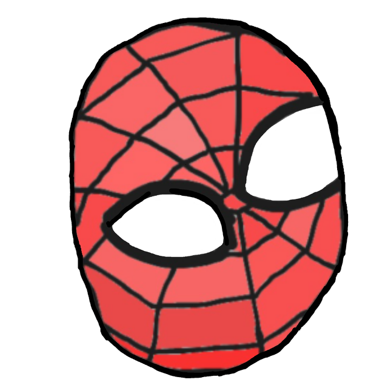
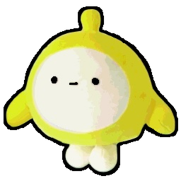
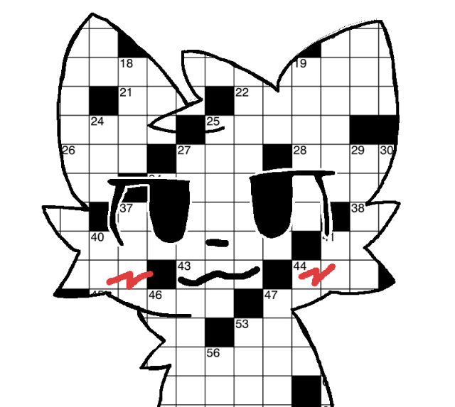
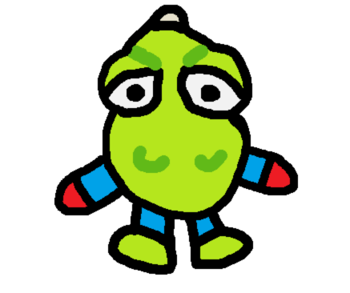
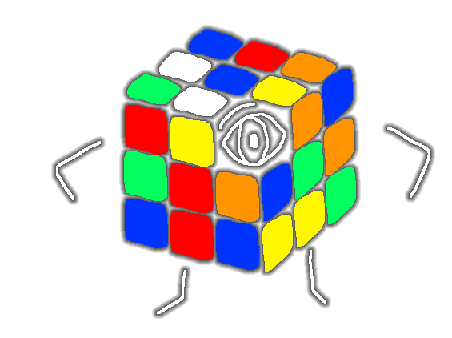

Zachary Edward-Brown
zeb (he/him) is a high schooler from Chicago who enjoys playing soccer and basketball, running occasional Tetris 1v1s, writing sports journalism, and rooting for the Bears. Find more of his published work here.

Escher
Escher (he/him) is a high schooler from North Carolina and grid connoisseur. He can often be seen playing games like Super Mario Maker 2 and Geometry Dash, binging stand-up comedy, and doodling humorous creatures in humorous situations. He also occasionally posts on his blog, Escher's Xwords.

Bryan Cheong
Bryan Cheong (he/him) is a secondary schooler from Singapore who loves trying new foods. Last year, he was also a crossword constructor, but younger. In his free time, he enjoys writing and cycling, although he hasn't tried them simultaneously yet.

the
the (they/them) is a soul-searching secondary schooler from Bangkok. Their special interests include ARGs, etymology, and crosswords. They hope to see the day when there is less hate than love in this world.

Mason Hyunjin Lee
Mason Hyunjin Lee (he/him) is a junior in high school from California, and he's a huge fan of painting, karaoke, and going to the gym. He loves crosswords most of all, spending at least 2 hours every week to tackle a new theme, whether simple or tricky.

Kevin Thompson
Kevin Thompson (he/him) is a high school senior from California who likes running cross country, juggling, and building model rockets. His favorite types of crosswords are simple but satisfying themed puzzles and extra-large themelesses.